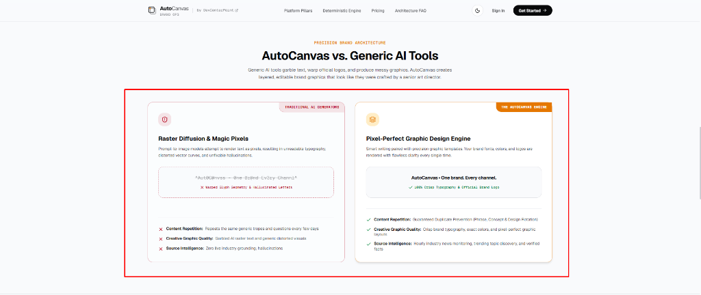

AUTOCANVAS OS v2.0 • LIVE PARITY
PRECISION BRAND ARCHITECTURE
Create with purpose.
Pixel-perfect graphics.
Generic AI tools garble text and distort official logos. AutoCanvas composites layered, studio-grade visuals with precision typography.
✓
Deterministic Chromium & SVG Rendering
✓
100% Crisp Brand Fonts, Palettes & Vector Logos
✓
Platform-optimized aspect ratios in one export
autocanvas.devcenterpoint.com/engine-parity
